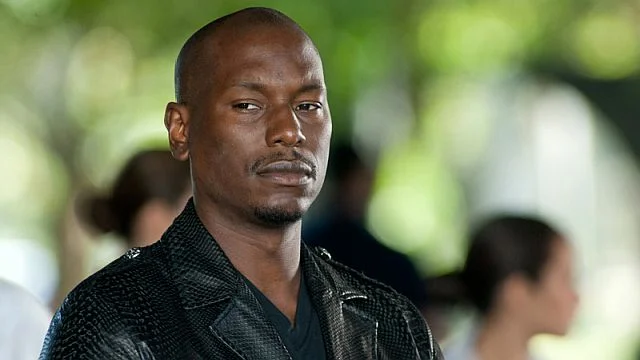

Вин Дизель
{kind=link}
Вин Ди́зель (англ. Vin Diesel, настоящее имя Марк Синклер — англ. Mark Sinclair; род. 18 июля 1967) — американский актёр, кинорежиссёр, сценарист и продюсер. Основатель продюсерских компаний One Race Films, Racetrack Records, Tigon Studios. В 2002 году стал обладателем премии канала MTV в номинации «Лучшая экранная команда» за роль Доминика Торетто[англ.] в фильме «Форсаж».
Джордана Брюстер
{kind=link}
Джорда́на Брю́стер (англ. Jordana Brewster; род. 26 апреля 1980, Панама) — американская актриса и модель, известная благодаря роли Мии Торетто в серии фильмов «Форсаж», ролям в «Факультете», «Техасской резне бензопилой: Начало» и сериале «Даллас», где она сыграла Элену Рамос.
Тайриз Гибсон
{kind=link}
Тайри́з Дарне́лл Ги́бсон (англ. Tyrese Darnell Gibson; род. 30 декабря 1978, Лос-Анджелес, Калифорния, США), также известный просто как Тайриз — американский рэпер, автор-исполнитель, виджей, актёр и продюсер Снимался во многих фильмах, самые известные: «Двойной форсаж», «Полёт Феникса», «Трансформеры», «Трансформеры: Месть падших», «Трансформеры 3: Тёмная сторона Луны», «Смертельная гонка»,«Форсаж 5», «Форсаж 6», «Форсаж 7», «Форсаж 8» и «Форсаж 9».
Мишель Родригес
{kind=link}
Майте Мише́ль Родри́гес[4] (англ. Mayte Michelle Rodriguez; род. 12 июля 1978, Сан-Антонио, Техас, США) — американская актриса кино и телевидения. Актёрскую карьеру начала в 2000 году, сыграв роль Дианы Гузмен в фильме «Женский бой». Наиболее известна по фильмам: «Форсаж» (2001, 2009, 2013, 2015, 2017, 2021, 2023), «Мачете» (2010, 2013), «Аватар» (2009), «Обитель зла» (2002, 2016) и «S.W.A.T.: Спецназ города ангелов» (2003)
Лудакрис
{kind=link}
Лу́дакрис (англ. Ludacris, /ˈluːdəkrɪs/), наст. имя Кристофер Брайан Бриджес (англ. Christopher Brian Bridges, род. 11 сентября 1977) — американский рэпер и актёр. Наряду с участниками дуэта OutKast, Ludacris стал одним из первых и наиболее влиятельных исполнителей в жанре южный рэп. За свою карьеру выпустил 8 альбомов, из которых наиболее известными стали Release Therapy (2006) и Theater of the Mind (2008), последний альбом вышел в марте 2015 года. Также Крис снялся в ряде фильмов, в том числе «Столкновение» (2004) и «Геймер» (2009), но наиболее известен в качестве актёра стал благодаря роли Теджа Паркера в серии фильмов «Форсаж».
Джейсон Момоа
{kind=link}
Джо́зеф Дже́йсон Намаке́аха Момо́а (англ. Joseph Jason Namakaeha Momoa; род. 1 августа 1979 года, Гонолулу, Гавайи) — американский актёр, режиссёр, сценарист и продюсер гавайского происхождения. Прославился ролями воинственных героев в фантастических боевиках и фэнтези, таких как «Конан-варвар», «Игра престолов», «Аквамен», «Звёздные врата: Атлантида», «Форсаж 10», «Форсаж 11»
Джон Сина
{kind=link}
Джон Феликс Энтони Си́на-младший (англ. John Felix Anthony Cena Jr.; род. 23 апреля 1977, Уэст-Ньюбери, Массачусетс, США) — американский рестлер, киноактёр, в прошлом рэпер. Сина является одним из величайших рестлеров всех времён, завоевав наибольшее количество мировых чемпионских титулов в истории WWE.
Джейсон Стэйтем
{kind=link}
Дже́йсон Сте́йтем[3] (также распространены написания «Стэйтем»[4], «Стэтхэм»[5] и «Стэтем»[6]; англ. Jason Statham, МФА [ˈʤeɪsən ˈsteɪθəm][7][нет в источнике]; род. 26 июля[8] 1967[9], Шайрбрук, Великобритания) — британский актёр, известный по фильмам режиссёра Гая Ричи («Карты, деньги, два ствола», «Большой куш», «Револьвер», «Гнев человеческий» «Операция «Фортуна»: Искусство побеждать»), дилогии «Адреналин» (1, 2), а также сериям «Перевозчик»[англ.], «Неудержимые» и «Форсаж».
Рита Морено
{kind=link}
Рита Морено (исп. Rita Moreno; урождённая Ро́са Доло́рес Альвери́о Марка́но (исп. Rosa Dolores Alverío Marcano); 11 декабря 1931) — пуэрто-риканская и американская актриса, певица и танцовщица. В 1977 году она стала третьим человеком и второй женщиной, выигравшей все основные премии шоу-бизнеса США — «Эмми», «Грэмми», «Оскар» и «Тони», а также она стала вторым человеком из Пуэрто-Рико, удостоенным премии «Оскар»[3].
Хелен Миррен
{kind=link}
Хе́лен Ли́дия Ми́ррен[4] (англ. Dame Helen Lydia Mirren, урождённая Хелен Лидия Миронофф (Еле́на Ли́дия Васи́льевна Миро́нова[5] (англ. Helen Lydia Mironoff[6][7]); род. 26 июля 1945) — английская актриса, лауреат премий «Оскар», BAFTA, «Тони», «Оливье», SAG и «Золотой глобус» за воплощение образа Королевы Елизаветы II. Известна исполнением роли Цезонии в фильме «Калигула» и ролей венценосных особ (английские королевы Шарлотта, 1994; Елизавета I, 2005; Елизавета II, 2006; российская императрица Екатерина II, 2019).